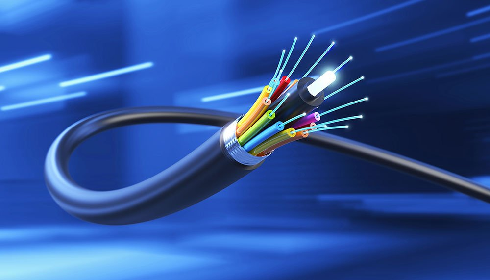

La fibra óptica transmite datos a través de pulsos de luz, ofreciendo una velocidad y capacidad superiores a los cables de cobre.
Es ideal para largas distancias y entornos donde la interferencia electromagnética es un problema. Existen diferentes tipos como fibra monomodo y fibra multimodo.
Además, los conectores de fibra óptica y los cables de fibra óptica son componentes esenciales para un sistema de calidad.